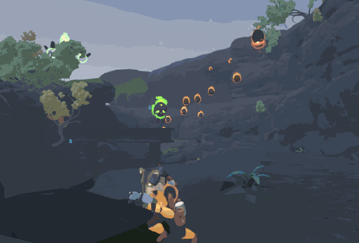

The Roguelike genre originated with the game "Rogue" in 1980, featuring turn-based gameplay, randomly generated dungeons, and permanent death. It inspired other developers to create similar games, leading to the birth of the Roguelike genre. Over time, Roguelikes evolved, incorporating more features, diverse monsters, and complex gameplay. Modern Roguelikes like "The Binding of Isaac" brought the genre to a wider audience, making it known for challenging gameplay and replayability.
